산업안전기사 (2015-05-31 기출문제)
1과목: 안전관리론
1. 다음 중 교육심리학의 학습이론에 관한 설명으로 옳은 것은?
- 파블로프(Pavlov)의 조건반사설은 맹목적 시행을 반복하는 가운데 자극과 반응이 결합하여 행동하는 것이다.
- 레윈(Lewin)의 장설은 후천적으로 얻게 되는 반사 작용으로 행동을 발생시킨다는 것이다.
- 톨만(Tolman)의 기호형태설은 학습자의 머리 속에 인지적 지도 같은 인지구조를 바탕으로 학습하려는 것이다.
- 손다이크(Thorndike)의 시행착오설은 내적, 외적의 전체구조를 새로운 시점에서 파악하여 행동하는 것이다.
(정답률: 73%)

2. 다음 중 헤드십(head-ship)의 특성으로 옳지 않은 것은?
- 권한의 근거는 공식적이다.
- 지휘의 형태는 권위주의적이다.
- 상사와 부하와의 사회적 간격은 좁다.
- 상사와 부하와의 관계는 지배적이다.
(정답률: 89%)
3. 다음 중 하인리히 방식의 재해코스트 산정에 있어 직접비에 해당되지 않은 것은?
- 간병급여
- 신규채용비용
- 직업재활급여
- 상병(傷病)보상연금
(정답률: 79%)
4. 다음 중 무재해운동의 이념에서 “선취의 원칙”을 가장 적절하게 설명한 것은?
- 사고의 잠재요인을 사후에 파악하는 것
- 근로자 전원의 일체감을 조성하여 참여하는 것
- 위험요소를 사전에 발견, 파악하여 재해를 예방하거나 방지하는 것
- 관리감독자 또는 경영층에서의 자발적 참여로 안전 활동을 촉진하는 것
(정답률: 91%)
5. 다음 중 안전ㆍ보건교육계획의 수립시 고려할 사항으로 가장 거리가 먼 것은?
- 현장의 의견을 충분히 반영한다.
- 대상자의 필요한 정보를 수집한다.
- 안전교육시행체계와의 연관성을 고려한다.
- 정부 규정에 의한 교육에 한정하여 실시한다.
(정답률: 89%)
6. 다음 중 몇 사람의 전문가에 의하여 과제에 관한 견해를 발표한 뒤에 참가자로 하여금 의견이나 질문을 하게 하여 토의하는 방법을 무엇이라 하는가?
- 심포지엄(Symposium)
- 버즈 세션(Buzz session)
- 케이스 메소드(case method)
- 패널 디스커션(Panel discussion)
(정답률: 90%)
7. 다음 중 산업안전보건법령상 사업내 안전ㆍ보건교육에 있어 관리감독자의 정기안전보건 교육 내용에 해당하는 것은? (단, 기타 산업안전보건법 및 일반관리에 관한 사항은 제외한다.)
- 작업 개시 전 점검에 관한 사항
- 정리정돈 및 청소에 관한 사항
- 작업공정의 유해ㆍ위험과 재해 예방대책에 관한 사항
- 기계ㆍ기구의 위험성과 작업의 순서 및 동선에 관한 사항
(정답률: 72%)
8. 다음 중 위험예지훈련에 있어 Touch and call에 관한 설명으로 가장 적절한 것은?
- 현장에서 팀 전원이 각자의 왼손을 맞잡아 원을 만들어 팀 행동목표를 지적확인하는 것을 말한다.
- 현장에서 그때 그 장소의 상황에서 즉응하여 실시하는 위험예지활동으로 즉시즉응법이라고도 한다.
- 작업자가 위험작업에 임하여 무재해를 지향하겠다는 뜻을 큰소리로 호칭하면서 안전의식수준을 제고하는 기법이다.
- 한 사람 한 사람의 위험에 대한 감수성 향상을 도모하기 위한 삼각 및 원포인트 위험예지훈련을 통합한 활용기법이다.
(정답률: 81%)
9. 산업안전보건법령상 같은 장소에서 행하여지는 사업으로서 사업의 일부를 분리하여 도급을 주어하는 사업의 경우 산업재해를 예방하기 위한 조치로 구성ㆍ운영하는 안전ㆍ보건에 관한 협의체의 회의 주기로 옳은 것은?
- 매월 1회 이상
- 2개월 간격의 1회 이상
- 3개월 내의 1회 이상
- 6개월 내의 1회 이상
(정답률: 70%)
10. 다음 중 재해예방을 위한 시정책인 “3E"에 해당하지 않는 것은?
- Education
- Energy
- Engineering
- Enforcement
(정답률: 75%)
11. 다음 중 산업안전보건법령상 안전ㆍ보건표지의 색체의 색도기준이 잘못 연결된 것은? (단, 색도기준은 KS에 따른 색의 3속성에 의한 표시방법에 따른다.)
- 빨간색 - 7.5R 4/14
- 노란색 - 5Y 8.5/12
- 파란색 - 2.5PB 4/10
- 흰색 - N0.5
(정답률: 86%)
12. 다음 중 부주의의 발생 현상으로 혼미한 정신상태에서 심신의 피로나 단조로운 반복작업시 일어나는 현상은?
- 의식의 과잉
- 의식의 집중
- 의식의 우회
- 의식 수준의 저하
(정답률: 71%)
13. 다음 중 레윈(Lewin.K)에 의하여 제시된 인간의 행동에 관한 식을 올바르게 표현한 것은? (단, B는 인간의 행동, P는 개체, E는 환경, f는 함수관계를 의미한다.)
- B = f(P.E)
- B = f(P+1)B
- P = E.f(B)
- E = f(B+1)P
(정답률: 91%)
14. 베어링을 생산하는 사업장에 300명의 근로자가 근무하고 있다. 1년에 21건의 재해가 발생하였다면 이 사업장에서 근로자 1명이 평생 작업시 약 몇 건의 재해를 당할 수 있겠는가? (단, 1일 8시간씩, 1년에 300일 근무하며, 평생근로 시간은 10만시간으로 가정한다.)
- 1건
- 3건
- 5건
- 6건
(정답률: 67%)
15. 다음 중 점검시기에 따른 안전점검의 종류로 볼 수 없는 것은?
- 수시점검
- 개인점검
- 정기점검
- 일상점검
(정답률: 86%)
16. 다음 중 구체적인 동기유발요인과 가장 거리가 먼 것은?
- 작업
- 성과
- 권력
- 독자성
(정답률: 48%)
17. 다음 중 산업재해조사표를 작성할 때 기입하는 상해의 종류에 해당하는 것은?
- 낙하ㆍ비래
- 유해광선 노출
- 중독ㆍ질식
- 이상온도 노출ㆍ접촉
(정답률: 63%)
18. 다음 중 방진마스크의 구비 조건으로 적절하지 않은 것은?
- 흡기밸브는 미약한 호흡에 대하여 확실하고 예민하게 작동하도록 할 것
- 쉽게 착용되어야 하고 착용하였을 때 안면부가 안면에 밀착되어 공기가 새지 않을 것
- 여과재는 여과성능이 우수하고 인체에 장해를 주지 않을 것
- 흡ㆍ배기밸브는 외부의 힘에 의하여 손상되지 않도록 흡ㆍ배기 저항이 높을 것
(정답률: 80%)
19. 다음 중 인간의 적성과 안전과의 관계를 가장 올바르게 설명한 것은?
- 사고를 일으키는 것은 그 작업에 적성이 맞지 않는 사람이 그 일을 수행한 이유이므로, 반드시 적성검사를 실시하여 그 결과에 따라 작업자를 배치하여야 한다.
- 인간의 감각기별 반응시간은 시각, 청각, 통각 순으로 빠르므로 비상시 비상등을 먼저 켜야 한다.
- 사생활에 중대한 변화가 있는 사람이 사고를 유발할 가능성이 높으므로 그러한 사람들에게는 특별한 배려가 필요하다.
- 일반적으로 집단의 심적 태도를 교정하는 것보다 개인의 심적 태도를 교정하는 것이 더 용이하다.
(정답률: 70%)
20. 산업안전보건법상 산업안전보건위원회의 사용자위원에 해당되지 않는 것은? (단, 각 사업장은 해당하는 사람을 선임하여 하는 대상 사업장으로 한다.)
- 안전관리자
- 해당 사업장의 부서의 장
- 산업보건의
- 명예산업안전감독관
(정답률: 86%)
2과목: 인간공학 및 시스템안전공학
21. 다음 중 실효온도(Effective Temperature)에 대한 설명으로 틀린 것은?
- 체온계로 입안의 온도를 측정하여 기준으로 한다.
- 실제로 감각되는 온도로서 실감온도라고 한다.
- 온도, 습도 및 공기 유동이 인체에 미치는 열효과를 나타낸 것이다.
- 상대습도 100% 일 때의 건구온도에서 느끼는 것과 동일한 온감이다.
(정답률: 68%)
22. 다음 중 보전효과의 평가로 설비종합효율을 계산하는 식으로 옳은 것은?
- 설비종합효율 = 속도가동률×정미가동률
- 설비종합효율 = 시간가동률×성능가동률×양품률
- 설비종합효율 = (부하시간-정지시간)/부하시간
- 설비종합효율 = 정미가동률×시간가동률×양품률
(정답률: 51%)
23. 염산을 취급하는 A업체에서는 신설 설비에 관한 안전성 평가를 실시해야 한다. 다음 중 정성적 평가단계에 있어 설계와 관련된 주요 진단 항목에 해당하는 것은?
- 공장 내의 배치
- 제조공정의 개요
- 재평가 방법 및 계획
- 안전ㆍ보건교육 훈련계획
(정답률: 76%)
24. 그림과 같이 FT도에서 활용하는 논리게이트의 명칭으로 옳은 것은?(문제 오류로 실제 시험에서는 1번 2번이 정답 처리되었습니다. 여기서는 1번을누르면 정답 처리 됩니다.)
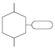
- 억제 게이트
- 제어 게이트
- 배타적 OR 게이트
- 우선적 AND 게이트
(정답률: 82%)
25. 인간의 위치 동작에 있어 눈으로 보지 않고 손을 수평 면상에서 움직이는 경우 짧은 거리는 지나치고, 긴 거리는 못 미치는 경향이 있는데 이를 무엇이라고 하는가?
- 사정효과(Range effect)
- 간격효과(Distance effect)
- 손동작효과(Hand action effect)
- 반응효과(Reaction effect)
(정답률: 72%)
26. 주어진 자극에 대해 인간이 갖는 변화감지역을 표현하는 데에는 웨버(Webber)의 법칙을 이용한다. 이 때 웨버(Webber) 비의 관계식으로 옳은 것은? (단, 변화감지역을 ΔI, 표준자극을 I라 한다.)
- 웨버(Webber)의 비 =
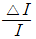
- 웨버(Webber)의 비 =
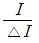
- 웨버(Webber)의 비 =
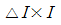
- 웨버(Webber)의 비 =
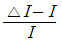
(정답률: 70%)
27. 다음 중 동작경제의 원칙에 있어 “신체사용에 관한 원칙”에 해당하지 않는 것은?
- 두 손의 동작은 동시에 시작해서 동시에 끝나야 한다.
- 손의 동작은 유연하고 연속적인 동작이어야 한다.
- 공구, 재료 및 제어장치는 사용하기 가까운 곳에 배치해야 한다.
- 동작이 급작스럽게 크게 바뀌는 직선 동작은 피해야 한다.
(정답률: 58%)
28. 실린더 블록에 사용하는 가스켓의 수명은 평균 10000시간이며, 표준편차는 200시간으로 정규분포를 따른다. 사용시간이 9600시간일 경우 이 가스켓의 신뢰도는 약 얼마인가? (단, 표준정규분포상 Z1=0.8413, Z2=0.9772 이다.)
- 84.13%
- 88.73%
- 92.72%
- 97.72%
(정답률: 60%)
29. 다음 중 인간공학을 나타내는 용어로 적절하지 않은 것은?
- ergonomics
- human factors
- human engineering
- customize engineering
(정답률: 69%)
30. 다음 중 결함수분석의 기대효과와 가장 관계가 먼 것은?
- 사고원인 규명의 간편화
- 시간에 따른 원인 분석
- 사고원인 분석의 정량화
- 시스템의 결함 진단
(정답률: 59%)
31. 인체 계측 중 운전 또는 워드 작업과 같이 인체의 각 부분이 서로 조화를 이루며 움직이는 자세에서의 인체치수를 측정하는 것을 무엇이라 하는가?
- 구조적 치수
- 정적 치수
- 외곽 치수
- 기능적 치수
(정답률: 63%)
32. 말소리의 질에 대한 객관적 측정 방법으로 명료도 지수를 사용하고 있다. 그림에서와 같은 경우 명료도 지수는 약 얼마인가?
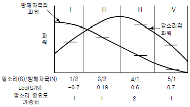
- 0.38
- 0.68
- 1.38
- 5.68
(정답률: 58%)
33. 휴식 중 에너지소비량은 1.5kcal/min이고, 어떤 작업의 평균 에너지소비량이 6kcal/min이라고 할 때 60분간 총 작업시간 내에 포함되어야 하는 휴식시간은 약 몇 분인가? (단, 기초대사를 포함한 작업에 대한 평균 에너지소비량의 상한은 5kcal/min이다.)
- 10.3
- 11.3
- 12.3
- 13.3
(정답률: 42%)
34. Rasmussen은 행동을 세 가지로 분류하였는데, 그 분류에 해당하지 않는 것은?
- 숙련 기반 행동(skill-based behavior)
- 지식 기반 행동(knowledge-based behavior)
- 경험 기반 행동(experience-based behavior)
- 규칙 기반 행동(rule-based behavior)
(정답률: 40%)
35. 다음 중 복잡한 시스템을 설계, 가공하기 전의 구상단계에서 시스템의 근본적인 위험성을 평가하는 가장 기초적인 위험도 분석기법은?
- 예비위험분석(PHA)
- 결함수 분석법(FTA)
- 운용 안전성 분석(OSA)
- 고장의 형과 영향분석(FMEA)
(정답률: 83%)
36. 다음 중 FTA에서 활용하는 최소 컷셋(Minimal cut sets)에 관한 설명으로 옳은 것은?
- 해당 시스템에 대한 신뢰도를 나타낸다.
- 컷셋 중에 타 컷셋을 포함하고 있는 것을 배제하고 남은 컷셋들을 의미한다.
- 어느 고장이나 에러를 일으키지 않으면 재해가 일어나지 않는 시스템의 신뢰성이다.
- 기본사상이 일어나지 않을 때 정상사상(Top event)이 일어나지 않는 기본사상의 집합이다.
(정답률: 53%)
37. 다음은 유해.위험방지계획서의 제출에 관한 설명이다. ( ) 안의 내용으로 옳은 것은?
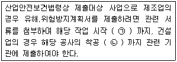
- (ㄱ) : 15일 전, (ㄴ) : 전날
- (ㄱ) : 15일 전, (ㄴ) : 7일 전
- (ㄱ) : 7일 전, (ㄴ) : 전날
- (ㄱ) : 7일 전, (ㄴ) : 3일 전
(정답률: 64%)
38. 다음 중 청각적 표시장치의 설계에 관한 설명으로 가장 거리가 먼 것은?
- 신호를 멀리 보내고자 할 때에는 낮은 주파수를 사용하는 것이 바람직하다.
- 배경 소음의 주파수와 다른 주파수의 신호를 사용하는 것이 바람직하다.
- 신호가 장애물을 돌아가야 할 때에는 높은 주파수를 사용하는 것이 바람직하다.
- 경보는 청취자에게 위급 상황에 대한 정보를 제공하는 것이 바람직하다.
(정답률: 68%)
39. 다음 중 시스템 안전계획(SSPP, System Safety Program Plan)에 포함되어야 할 사항으로 가장 거리가 먼 것은?
- 안전조직
- 안전성의 평가
- 안전자료의 수집과 갱신
- 시스템의 신뢰성 분석비용
(정답률: 73%)
40. 다음 중 감각적으로 물리현상을 왜곡하는 지각현상에 해당하는 것은?
- 주의산만
- 착각
- 피로
- 무관심
(정답률: 72%)
3과목: 기계위험방지기술
41. 다음 중 산업안전보건법령상 아세틸렌 가스용접장치에 관한 기준으로 틀린 것은?
- 전용의 발생기실을 옥외에 설치한 경우에는 그 개구부를 다른 건축물로부터 1.5m 이상 떨어지도록 하여야 한다.
- 아세틸렌 용접장치를 사용하여 금속의 용접.용단 또는 가열작업을 하는 경우에는 게이지 압력이 127kPa을 초과하는 압력의 아세틸렌을 발생시켜 사용해서는 아니 된다.
- 전용의 발생기실을 설치하는 경우 벽은 불연성 재료로 하고 철근 콘크리트 또는 그 밖에 이와 동등 하거나 그 이상의 강도를 가진 구조로 하여야 한다.
- 전용의 발생기실은 건물의 최상층에 위치하여야 하며, 화기를 사용하는 설비로부터 1m를 초과하는 장소에 설치하여야 한다.
(정답률: 72%)
42. 다음 중 프레스를 제외한 사출성형기(射出成形機).주형 조형기(鑄型造形機) 및 형단조기 등에 관한 안전조치 사항으로 틀린 것은?
- 근로자의 신체 일부가 말려들어갈 우려가 있는 경우에는 양수조작식 방호장치를 설치하여 사용한다.
- 게이트가드식 방호장치를 설치할 경우에는 인터록(연동)장치를 사용하여 문을 닫지 않으면 동작되지 않는 구조로 한다.
- 연 1회 이상 자체검사를 실시하고, 이상 발견 시에는 그것에 상응하는 조치를 이행하여야 한다.
- 기계의 히터 등의 가열부위, 감전우려가 있는 부위에는 방호덮개를 설치하여 사용한다.
(정답률: 51%)
43. 비파괴 검사 방법 중 육안으로 결함을 검출하는 시험법은?
- 방사선 투과시험
- 와류 탐상시험
- 초음파 탐상시험
- 자분 탐상시험
(정답률: 68%)
44. 와이어로프의 파단하중을 P(kg), 로프가닥수를 N, 안전 하중을 Q(kg)라고 할 때 다음 중 와이어로프의 안전율 S를 구하는 산식은?
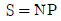
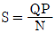
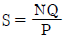
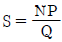
(정답률: 63%)
45. 무부하 상태에서 지게차로 20km/h의 속도로 주행할 때 좌우 안정도는 몇 % 이내이어야 하는가?
- 37%
- 39%
- 41%
- 43%
(정답률: 67%)
46. 선반작업 시 발생하는 칩(chip)으로 인한 재해를 예방하기 위하여 칩을 짧게 끊어지게 하는 것은?
- 방진구
- 브레이크
- 칩 브레이커
- 덮개
(정답률: 83%)
47. 다음 중 선반의 안전장치 및 작업시 주의사항으로 잘못된 것은?
- 선반의 바이트는 되도록 짧게 물린다.
- 방진구는 공작물의 길이가 지름의 5배 이상일 때 사용한다.
- 선반의 베드 위에는 공구를 올려놓지 않는다.
- 칩 브레이커는 바이트에 직접 설치한다.
(정답률: 65%)
48. 완전회전식 클러치 기구가 있는 동력프레스에서 양수기동식 방호장치의 안전거리는 얼마 이상이어야 하는가? (단, 확동클러치의 봉합개소의 수는 8개, 분당 행정수는 250SPM을 가진다.)
- 240mm
- 360mm
- 400mm
- 420mm
(정답률: 43%)
49. 동력식 수동대패에서 손이 끼지 않도록 하기 위해서 덮개 하단과 가공재를 송급하는 측의 테이블 면과의 틈새는 최대 몇 mm 이하로 조절해야 하는가?
- 8mm 이하
- 10mm 이하
- 12mm 이하
- 15mm 이하
(정답률: 50%)
50. 산업안전보건법령에서 정한 양중기의 종류에 해당하지 않는 것은?
- 크레인
- 도르래
- 곤돌라
- 리프트
(정답률: 71%)
51. 다음 중 연삭기의 방호대책으로 적절하지 않은 것은?
- 탁상용 연삭기의 덮개에는 워크레스트 및 조정편을 구비하여야 하며, 워크레스트는 연삭숫돌과의 간격을 3mm 이하로 조정할 수 있는 구조이어야 한다.
- 연삭기 덮개의 재료는 인장강도의 값(단위:MPa)에 신장도(단위:%)의 20배를 더한 값이 754.5 이상이어야 한다.
- 연삭숫돌을 교체한 후에는 3분 이상 시운전을 한다.
- 연삭숫돌의 회전속도시험은 제조 후 규정 속도의 0.5배로 안전시험을 한다.
(정답률: 66%)
52. 페일 세이프(fail safe)의 기계설계상 본질적 안전화에 대한 설명으로 틀린 것은?
- 구조적 fail safe : 인간이 기계 등의 취급을 잘못해도 그것이 바로 사고나 재해와 연결되는 일이 없는 기능을 말한다.
- fail-passive : 부품이 고장 나면 통상적으로 기계는 정지하는 방향으로 이동한다.
- fail-active : 부품이 고장 나면 기계는 경보를 울리는 가운데 짧은 시간 동안의 운전이 가능하다.
- fail-operational : 부품의 고장이 있어도 기계는 추후의 보수가 될 때까지 안전한 기능을 유지하며 이것은 병렬계통 또는 대기여분(Stand-by redundancy) 계통으로 한 것이다.
(정답률: 56%)
53. 광전자식 방호장치의 광선에 신체의 일부가 감지된 후로부터 급정지기구가 작동개시 하기까지의 시간이 40ms이고, 광축의 설치거리가 96mm일 때 급정지기구가 작동개시한 때로부터 프레스기의 슬라이드가 정지될 때까지의 시간은 얼마인가?
- 15ms
- 20ms
- 25ms
- 30ms
(정답률: 48%)
54. 산업안전보건기준에 관한 규칙에 따라 기계.기구 및 설비의 위험예방을 위하여 사업주는 회전축.기어.풀리 및 풀라이휠 등에 부속되는 키.핀 등의 기계요소는 어떠한 형태로 설치하여야 하는가?
- 개방형
- 돌출형
- 묻힘형
- 고정형
(정답률: 76%)
55. 다음 설명은 보일러의 장해 원인 중 어느 것에 해당되는가?
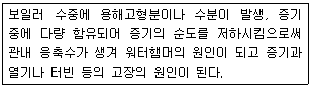
- 프라이밍(priming)
- 포밍(forming)
- 캐리오버(carry over)
- 역화(back fire)
(정답률: 59%)
56. 다음 중 설비의 진단방법에 있어 비파괴시험이나 검사에 해당하지 않는 것은?
- 피로시험
- 음향탐상검사
- 방사선투과시험
- 초음파탐상검사
(정답률: 81%)
57. 산업안전보건법령에 따라 산업용 로봇의 작동범위에서 그 로봇에 관하여 교시 등의 작업을 할 때 작업 시작 전 점검사항이 아닌 것은?
- 외부 전선의 피복 또는 외장의 손상 유무
- 매니퓰레이터(manipulator) 작동의 이상 유무
- 제동장치 및 비상정지장치의 기능
- 윤활유의 상태
(정답률: 72%)
58. 롤러기의 방호장치 설치 시 유의해야 할 사항으로 거리가 먼 것은?
- 손으로 조작하는 급정지장치의 조작부는 롤러기의 전면 및 후면에 각각 1개씩 수평으로 설치하여야 한다.
- 앞면 롤러의 표면속도가 30m/min 미만인 경우 급정지 거리는 앞면 롤러 원주의 1/2.5 이하로 한다.
- 작업자의 복부로 조작하는 급정지장치는 높이가 밑면으로부터 0.8m 이상 1.1m 이내에 설치되어야 한다.
- 급정지장치의 조작부에 사용하는 줄은 사용 중 늘어져서는 안되며 충분한 인장강도를 가져야 한다.
(정답률: 75%)
59. 다음 중 가스용접토치가 과열되었을 때 가장 적절한 조치 사항은?
- 아세틸렌과 산소 가스를 분출시킨 상태로 물속에서 냉각시킨다.
- 아세틸렌가스를 멈추고 산소 가스만을 분출시킨 상태로 물속에서 냉각시킨다.
- 산소 가스를 멈추고 아세틸렌가스만을 분출시킨 상태로 물속에서 냉각시킨다.
- 아세틸렌가스만을 분출시킨 상태로 팁 클리너를 사용하여 팁을 소제하고 공기 중에서 냉각시킨다.
(정답률: 55%)
60. 프레스 작업 중 부주의로 프레스의 페달을 밟는 것에 대비하여 페달에 설치하는 것을 무엇이라 하는가?
- 클램프
- 로크너트
- 커버
- 스프링 와셔
(정답률: 72%)
4과목: 전기위험방지기술
61. 다음 ( ) 안에 들어갈 내용으로 알맞은 것은?
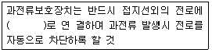
- 직렬
- 병렬
- 임시
- 직병렬
(정답률: 74%)
62. 제 3종 접지공사를 시설하여야 하는 장소가 아닌 것은?(관련 규정 개정전 문제로 여기서는 기존 정답인 3번을 누르면 정답 처리됩니다. 자세한 내용은 해설을 참고하세요.)
- 금속몰드 배선에 사용하는 몰드
- 고압계기용 변압기의 2차측 전로
- 고압용 금속제 케이블트레이 계통의 금속트레이
- 400V 미만의 저압용 기계기구의 철제 및 금속제 외함
(정답률: 67%)
63. 3300/220V, 20kVA인 3상 변압기에서 공급받고 있는 저압전선로의 절연부분 전선과 대지간의 절열저항 최소값은 약 몇 Ω 인가? (단, 변압기 저압측 1단자는 제2종 접지공사를 시행함
- 1240
- 2794
- 4840
- 8383
(정답률: 36%)
64. 전격현상의 위험도를 결정하는 인자에 대한 설명으로 틀린 것은?
- 통전전류의 크기가 클수록 위험하다.
- 전원의 종류가 통전시간보다 더욱 위험하다.
- 전원의 크기가 동일한 경우 교류가 직류보다 위험하다.
- 통전전류의 크기는 인체에 저항이 일정할 때 접속 접압에 비례한다.
(정답률: 58%)
65. 폭발위험장소에서 점화성 불꽃이 발생하지 않도록 전기 설비를 설치하는 방법으로 틀린 것은?
- 낙뢰 방호조치를 취한다.
- 모든 설비를 등전위 시킨다.
- 정전기의 영향을 안전한계 이내로 줄인다.
- 0종 장소는 금속부에 전식방지설비를 한다.
(정답률: 44%)
66. 정전기를 제거하려 한 행위 중 폭발이 발생하였다면 다음 중 어떤 경우인가?
- 가습
- 자외선 공급
- 온도조절
- 금속부분 접지
(정답률: 71%)
67. 온도조절용 바이메탈롸 온도 퓨즈가 회로에 조합되어 있는 다리미를 사용한 가정에서 화재가 발생했다. 다리미에 부착되어 있던 바이메탈과 온도퓨즈를 대상으로 화재사고를 분석하려 하는데 논리기호를 사용하여 표현 하고자 한다. 어느 기호가 적당하겠는가? (단, 바이메탈의 작동과 온도 퓨즈가 끊어졌을 경우를 0, 그렇지 않을 경우를 1이라 한다.)
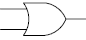
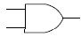
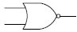
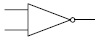
(정답률: 64%)
68. 스파크 화재의 방지책이 아닌 것은?
- 개폐기를 불연성 외함 내에 내장시키거나 통형 퓨즈를 사용할 것
- 접지부분의 산화, 변형, 퓨트의 나사풀림 등으로 인한 접촉 저항이 증가되는 것을 방지할 것
- 가연성 증기, 분진 등 위험한 물질이 있는 곳에는 방폭형 개폐기를 사용할 것
- 유입 개폐기는 절연유의 비중 정도, 배선에 주의하고 주위에는 내수벽을 설치할 것
(정답률: 52%)
69. 제전기의 제전효과에 영향을 미치는 요인으로 볼 수 없는 것은?
- 제전기의 이온 생성능력
- 전원의 극성 및 전선의 길이
- 대전 물체의 대전위치 및 대전분포
- 제전기의 설치 위치 및 설치 각도
(정답률: 47%)
70. 감전에 의해 호흡이 정지한 후에 인공호흡을 즉시 실시하면 소생할 수 있는데, 감전에 의한 호흡 정지 후 3분 이내에 올바른 방법으로 인공호흡을 실시하였을 경우 소생율은 약 몇 % 정도 인가?
- 25
- 50
- 75
- 95
(정답률: 67%)
71. 절연 안전모의 사용 시 주의사항으로 틀린 것은?
- 특고압 작업에서도 안전도가 충분하므로 전격을 방지하는 목적으로 사용할 수 있다.
- 절연모를 착용할 때에는 턱걸이 끈을 안전하게 죄어야 한다.
- 머리 윗부분과 안전모의 간격은 1cm 이상이 되도록 한다.
- 내장포(충격흡수라이너) 및 턱 끈이 파손되면 즉시 대체하여야 하고 대용품을 사용하여서는 안 된다.
(정답률: 67%)
72. 폭발위험장소에서의 본질안전 방폭구조에 대한 설명으로 틀린 것은?
- 본질안전 방폭구조의 기본적 개념은 점화능력의 본질적 억제이다.
- 본질안전 방폭구조의 Exib는 fault에 대한 2중 안전 보장으로 0종~2종 장소에 사용할 수 있다.
- 본질안전 방폭구조의 적용은 에너지가 1.3W, 30V 및 250mA 이하의 개소에 가능하다.
- 온도, 압력, 액면유량 등의 검출용 측정기는 대표적인 본질안전 방폭구조의 예이다.
(정답률: 64%)
73. 인체가 현저하게 젖어있는 상태 또는 금속성의 전기기계 장치나 구조물에 인체의 일부가 상시 접속되어 있는 상태에서의 허용접촉전압은 일반적으로 몇 V 이하로 하고 있는가?
- 2.5V 이하
- 25V 이하
- 50V 이하
- 75V 이하
(정답률: 59%)
74. 정전기 발생현상의 분류에 해당되지 않는 것은?
- 유체대전
- 마찰대전
- 박리대전
- 유동대전
(정답률: 70%)
75. 인체의 전기저항이 5000Ω이고, 세동전류와 통전시간과 의 관계를
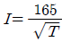
mA라 할 경우, 심실세동을 일으키는 위험 에너지는 약 몇 J 인가? (단, 통전시간은 1초로 한다.)- 5
- 30
- 136
- 825
(정답률: 78%)
76. 전선로 등에서 아크화상 사로 시 전선이나 개폐기 터미널 등의 금속 분자가 고열로 용융되어 피부 속으로 녹아 들어가는 현상은?
- 피부의 광성변화
- 전문
- 표피박탈
- 전류반점
(정답률: 63%)
77. 아세톤을 취급하는 작업장에서 작업자의 정전기 방전으로 인한 화재폭발 재해를 방지하기 위하여 인체대전 전위는 약 몇 V 이하로 유지하여야 하는가? (단, 인체의 정전용량 100pF이고, 아세톤의 최소 착화 에너지는 1.15mJ로 하며 기타의 조건은 무시한다.)
- 1150
- 2150
- 3800
- 4800
(정답률: 41%)
78. 금속제 외함을 가지는 기계기구에 전기를 공급하는 전로에 지락이 발생했을 때에 자동적으로 전로를 차단하는 누전차단기 등을 설치하여야 한다. 누전차단기를 설치하지 않아도 되는 경우로 틀린 것은?
- 기계기구 고무, 합성수지 기타 절연물로 피복된 것일 경우
- 기계기구가 유도전동기의 2차측 전로에 접속된 저항기일 경우
- 대지전압이 150V를 초과하는 전동기계ㆍ기구를 시설하는 경우
- 전기용품안전관리법의 적용을 받는 2중절연구조의 기계기구를 시설하는 경우
(정답률: 59%)
79. 심장의 맥동주기 중 어느 때에 전격이 인가되면 심실세동을 일으킬 확률이 크고 위험한가?
- 심방의 수축이 있을 때
- 심실의 수축이 있을 때
- 심실의수축종료 후심실의휴식이 있을때
- 심실의 수축이 있고 심방의 휴식이 있을 때
(정답률: 74%)
80. 뇌해를 받을 우려가 있는 곳에는 피뢰기를 시설하여야 한다. 시설하지 않아도 되 곳은?
- 가공전선로의 지중전선로가 접속하는 곳
- 발전소, 변전소의 가공전선 인입구 및 입출구
- 습뢰 빈도가 적은 지역으로서 방출 보호통을 장치하는 곳
- 특고압 가공전선로로부터 공급을 받는 수용장소의 인입구
(정답률: 69%)
5과목: 화학설비위험방지기술
81. 에틸에테르와 에틸알콜이 3:1로 혼합증기의 몰비가 각각 0.75, 0.25 이고 , 에틸에테르와 에틸알콜의 폭발하한값이 각각 1.9vol%, 4.3vol%일 때 혼합가스의 폭발하한값은 약 몇 vol%인가?
- 2.2
- 3.5
- 22.0
- 34.7
(정답률: 59%)
82. 다량의 황산이 가연물과 혼합되어 화재가 발생하였을 경우의 소화방법으로 적절하지 않은 방법은?
- 건조분말로 질식소화를 한다.
- 회(灰)로 덮어 질식소화를 한다.
- 마른 모래로 덮어 질식소화를 한다.
- 물을 뿌려 냉각소화 및 질식소화를 한다.
(정답률: 75%)
83. 폭발에 관한 용어 중 “BLEVE"가 의미하는 것은?
- 고농도 분진폭발
- 저농도의 분해폭발
- 개방계 증기운 폭발
- 비등액 팽창증가 폭발
(정답률: 76%)
84. 다음 중 산업안전보건법상 공정안전보고서에 포함되어야 할 사항으로 가장 거리가 먼 것은?
- 평균안전율
- 공정안전자료
- 비상조치계획
- 공정위험성 평가서
(정답률: 60%)
85. 분진폭발의 특징으로 옳은 것은?
- 연소속도가 가스폭발보다 크다.
- 완전연소로 가스중독의 위험이 작다.
- 화염의 파급속도보다 압력의 파급속도가 크다.
- 가스 폭발보다 연소시간이 짧고 발생에너지가 작다.
(정답률: 73%)
86. 반응폭발에 영향을 미치는 요인 중 그 영향이 가장 적은 것은?
- 교반상태
- 냉각시스템
- 반응온도
- 반응생성물의 조성
(정답률: 47%)
87. 비중이 1.5이고, 직경이 74μm인 분체가 종말속도 0.2m/s로 직경 6m의 사일로(silo)에서 질량유속 400kg/h로 흐를 때 평균 농도는 약 얼마인가?
- 10.8mg/L
- 14.8mg/L
- 19.8mg/L
- 25.8mg/L
(정답률: 39%)
88. 마그네슘의 저장 및 취급에 관한 설명으로 틀린 것은?
- 화기를 엄금하고, 가열, 충격, 마찰을 피한다.
- 분말이 비상하지 않도록 완전 밀봉하여 저장한다.
- 1류 또는 6류와 같은 산화제를 혼합하지 않도록 격리, 저장한다.
- 일단 연소하면 소화가 곤란하지만 초기 소화 또는 소규모 화재시 물, CO2 소화설비를 이용하여 소화한다.
(정답률: 75%)
89. 다음 중 중합반응으로 발열을 일으키는 물질은?
- 인산
- 아세트산
- 옥실산
- 액화시안화수소
(정답률: 51%)
90. 유류저장탱크에서 화염의 차단을 목적으로 외부에 증기를 방출하기도 하고 탱크 내 외기를 흡입하기도 하는 부분에 설치하는 안전장치는?
- ventstack
- safety valve
- gate valve
- flame arrester
(정답률: 72%)
91. 다음 중 화염방지기의 구조 및 설치 방법에 관한 설명으로 옳지 않은 것은?
- 화염방지기는 보호대상 화학설비와 연결된 통기관의 중앙에 설치하여야 한다.
- 화염방지성능이 있는 통기밸부인 경우를 제외하고 화염방지기를 설치하여야 한다.
- 본체는 금속제로 내식성이 있어야 하며, 폭발 및 화재로 인한 압력과 온도에 견딜 수 있어야 한다.
- 소염소자는 내식, 내열성이 있는 재질이어야 하고, 이물질 등의 제거를 위한 정비작업이 용이하여야 한다.
(정답률: 64%)
92. 송풍기의 사상법칙에 관한 설명으로 옳지 않은 것은?
- 송풍량은 회전수와 비례한다.
- 정압은 회전수 제곱에 비례한다.
- 축동력은 회전수의 세제곱에 비례한다.
- 정압은 임펠러 직경의 네제곱에 비례한다.
(정답률: 58%)
93. 다음 중 유해화학물질의 중독에 대한 일반적인 응급처치 방법으로 적절하지 않은 것은?
- 알코올 등의 필요한 약품을 투여한다.
- 환자를 안정시키고, 침대에 옆으로 눕힌다.
- 호흡 정지 시 가능한 경우 인공호흡을 실시한다.
- 신체를 따뜻하게 하고 신선한 공기를 확보한다.
(정답률: 68%)
94. 반응기를 설계할 때 고려해야할 요인으로 가장 거리가 먼 것은?
- 부식성
- 상의 형태
- 온도 범위
- 중간생성물의 유무
(정답률: 58%)
95. 다음 [표]의 가스를 위험도가 큰 것부터 작은 순으로 나열한 것은?
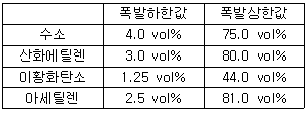
- 아세틸렌 - 산화에틸렌 - 이황화탄소 - 수소
- 아세틸렌 - 산화에틸렌 - 수소 - 이황화탄소
- 이황화탄소 - 아세틸렌 - 수소 - 산화에틸렌
- 이황화탄소 - 아세틸렌 - 산화에틸렌 - 수소
(정답률: 58%)
96. 산업안전보건법에서 규정한 급성독성물질은 쥐에 대한 4시간 동안의 흡입실험으로 실험동물 50%를 사망시킬 수 있는 농도(LC50)가 몇 ppm 이하인 물질을 말하는가?
- 1500
- 2500
- 3000
- 4000
(정답률: 54%)
97. 다음 중 자기반응성물질에 의한 화재에 대하여 사용할 수 없는 소화기의 종류는?
- 포소화기
- 무상강화액소화기
- 이산화탄소소화기
- 봉상수(棒狀水)소화기
(정답률: 43%)
98. 가연성 가스에 관한 설명으로 옳지 않은 것은?
- 메탄가스는 가장 간단한 탄화수소 기체이며, 온실효과가 있다.
- 프로판 가스의 연소범위는 2.1~9.5% 정도이며, 공기보다 무겁다.
- 아세틸렌가스는 용해 가스로서 녹색으로 도색한 용기를 사용한다.
- 수소가스는 물에 잘 녹지 않으며, 온도가 높아지면 반응성이 커진다.
(정답률: 72%)
99. 아세틸렌가스가 다음과 같은 반응식에 의하여 연소할 때 연소열은 약 몇 kcal/mol 인가? (단, 다음의 열역학 표를 참조하여 계산한다.)
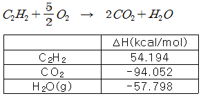
- -300.1
- -200.1
- 200.1
- 300.1
(정답률: 42%)
100. 화재감지기 중 연기감지기에 해당하지 않은 것은?
- 광전식
- 감광식
- 이온식
- 정온식
(정답률: 59%)
6과목: 건설안전기술
101. 다음 중 달비계 또는 높이 5m 이상의 비계를 조립ㆍ해체하거나 변경하는 작업을 하는 경우의 준수사항이다. 빈칸에 알맞은 숫자는?
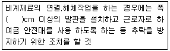
- 15
- 20
- 25
- 30
(정답률: 50%)
102. 다음 중 토사붕괴의 내적원인인 것은?
- 절토 및 성토 높이 증가
- 사면법면의 기울기 증가
- 토석의 강도저하
- 공사에 의한 진동 및 반복 하중 증가
(정답률: 65%)
103. 철륜 표면에 다수의 돌기를 붙여 접지면적을 작게 하여 접지압을 증가시킨 롤러로서 고함수비 점성토 지반의 다짐작업에 적합한 롤러는?
- 탠덤롤러
- 로드롤러
- 타이어롤러
- 탬핑롤러
(정답률: 66%)
104. 건설업 산업안전보건관리비 중 안전시설비로 사용할 수 없는 것은?
- 안전통로
- 비계에 추가 설치하는 추락방지용 안전난간
- 사다리 전도방지장치
- 통로의 낙하물 방호선반
(정답률: 62%)
1⑤. 토공기계 중 클램쉘(clam shell)의 용도에 대해 가장 잘 설명한 것은?
- 단단한 지반에 작업하기 쉽고 작업속도가 빠르며 특히 암반굴착에 적합하다.
- 수면하의 자갈, 실트 혹은 모래를 굴착하고 준설선에 많이 사용한다.
- 상당히 넓고 얕은 범위의 점토질 지반 굴착에 적합하다.
- 기계위치보다 높은 곳의 굴착, 비탈면 절취에 적합하다.
(정답률: 57%)
106. 사면 보호 공법 중 구조물에 의한 보호 공법에 해당되지 않는 것은?
- 현장타설 콘크리트 격자공
- 식생구멍공
- 블록공
- 돌쌓기공
(정답률: 70%)
107. 추락재해 방지를 위한 방망이 그물코 규격 기준으로 옳은 것은?
- 사각 또는 마름모로서 크기가 5센티미터 이하
- 사각 또는 마름모로서 크기가 10센티미터 이하
- 사각 또는 마름모로서 크기가 15센티미터 이하
- 사각 또는 마름모로서 크기가 20센티미터 이하
(정답률: 66%)
108. 건설업 유해위험방지계획서 제출 시 첨부서류에 해당되지 않는 것은?
- 공사개요서
- 산업안전보건관리비 사용계획서
- 재해발생 위험 시 연락 및 대피방법
- 특수공사계획
(정답률: 42%)
109. 인력운반 작업에 대한 안전 준수사항으로 가장 거리가 먼 것은?
- 보조기구를 효과적으로 사용한다.
- 물건을 들어올릴 때는 팔과 무릎을 이용하며 척추는 곧게 한다.
- 긴 물건은 뒤쪽으로 높이고 원통인 물건은 굴려서 운반한다.
- 무거운 물건은 공동작업으로 실시한다.
(정답률: 76%)
110. 안전계수가 4이고 2000kg/cm2의 인장강도를 갖는 강선의 최대허용응력은?
- 500 kg/cm2
- 1000 kg/cm2
- 1500 kg/cm2
- 2000 kg/cm2
(정답률: 77%)
111. 달비계의 와이어로프의 사용금지 기준에 해당하지 않는 것은?
- 와이어로프의 한 꼬임에서 끊어진 소선의 수가 10% 이상인 것
- 지름의 감소가 공칭지름의 7%를 초과하는 것
- 심하게 변형되거나 부식된 것
- 균열이 있는 것
(정답률: 54%)
112. 강관틀비계의 벽이음에 대한 조립간격 기준으로 옳은 것은? (단, 높이가 5m 미만인 경우 제외)
- 수직방향 5m, 수평방향 5m 이내
- 수직방향 6m, 수평방향 6m 이내
- 수직방향 6m, 수평방향 8m 이내
- 수직방향 8m, 수평방양 6m 이내
(정답률: 64%)
113. 터널공사에서 발파작업 시 안전대책으로 틀린 것은?
- 발파전 도화선 연결상태, 저항치 조사 등의 목적으로 도통시험 실시 및 발파기의 작동상태를 사전에 점검
- 동력선은 발원점으로부터 최소 15m 이상 후방으로 옮길 것
- 지질, 암의 절리 등에 따라 화약량 검토 및 시방기준과 대비하여 안전조치 실시
- 발파용 점화회선은 타동력선 및 조명회선과 한곳으로 통합하여 관리
(정답률: 76%)
114. 다음은 타워크레인을 와이어로프로 지지하는 경우의 준수해야 할 기준이다. 빈칸에 알맞은 내용을 순서대로 옳게 나타낸 것은?
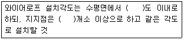
- 45, 4
- 45, 5
- 60, 4
- 60, 5
(정답률: 70%)
115. 콘크리트 타설시 거푸집 측압에 대한 설명 중 틀린 것은?
- 타설속도가 빠를수록 측압이 커진다.
- 거푸집의 투수성이 낮을수록 측압은 커진다.
- 타설높이가 높을수록 측압이 커진다.
- 콘크리트의 온도가 높을수록 측압이 커진다.
(정답률: 69%)
116. 훅걸이용 와이어로프 등이 훅으로부터 벗겨지는 것을 방지하기 위한 장치는?
- 해지장치
- 권과방지장치
- 과부하방지장치
- 턴버클
(정답률: 65%)
117. 철골작업을 중지하여야 하는 기준으로 옳은 것은?
- 1시간당 강설량이 1센티미터 이상인 경우
- 풍속이 초당 15미터 이상인 경우
- 진도 3 이상의 지진이 발생한 경우
- 1시간당 강우량이 1센티미터 이상인 경우
(정답률: 62%)
118. 건립 중 강풍에 의한 풍압 등 외압에 대한 내력이 설계에 고려되었는지 확인하여야 하는 철골주조물에 해당하지 않는 것은?
- 이음부가 현장용접인 건물
- 높이 15m인 건물
- 기둥이 타이플레이트(tie plate)형인 구조물
- 구조물의 폭과 높이의 비가 1:5인 구조물
(정답률: 53%)
119. 가설통로를 설치하는 경우의 준수해야 할 기준으로 틀린 것은?
- 건설공사에 사용하는 높이 8m 이상인 비계다리에는 5m 이내마다 계단침을 설치할 것
- 수직갱에 가설된 통로의 길이가 15m 이상인 경우에는 10m 이내마다 계단침을 설치할 것
- 경사가 15°를 초과하는 경우에는 미끄러지지 아니하는 구조로 할 것
- 추락할 위험이 있는 장소에는 안전난간을 설치할 것
(정답률: 71%)
120. 지반조사 중 예비조사 단계에서 흙막이 구조물의 종류에 맞는 형식을 선정하기 위한 조사항목과 거리가 먼 것은?
- 흙막이 벽 축조여부판단 및 굴착에 따른 안정이 충분히 확보될 수 있는지 여부
- 인근 지반의 지반조사자료나 시공자료의 수집
- 기상조건변동에 따른 영향 검토
- 주변의 환경(하천, 지표지질, 도로, 교통 등)
(정답률: 27%)